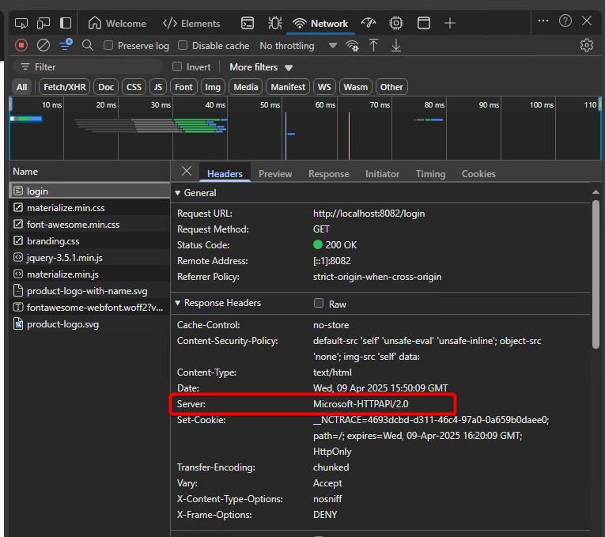
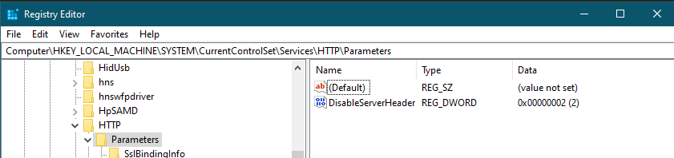
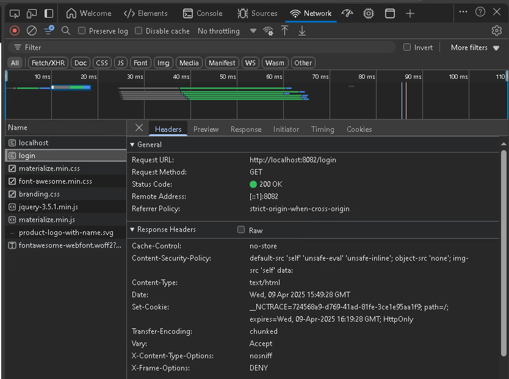

Overview
This article explains how to disable the server header in Netwrix Access Analyzer to
prevent banner grabbing, which can expose server information. Banner grabbing can be
caused by incorrectly configuring the Windows registry DisableServerHeader
setting on the host.
NOTE: Banner grabbing is the process of capturing banner information, such as application type and version, that is transmitted by a remote port when a connection is initiated. More details can be found here: Banner Grabbing ⸱ NIST 🡥

Instructions
Follow the steps below to disable the Server header in Access Analyzer.
-
Add or update the following registry key:
HKEY_LOCAL_MACHINE\System\CurrentControlSet\Services\HTTP\Parameters\DisableServerHeaderSet the value to:
DWORD: 000002 -
Reboot the server to apply the changes.
IMPORTANT: Modifications to this registry setting may occur due to the following reasons:
- Access Analyzer and Access Information Center will not modify this setting during patching.
- Microsoft may release a patch that changes its behavior, or internal configurations may enforce changes to the OS, altering this setting.
- Operating system configurations, such as group policy settings, may impact this setting or product functionality. Configuring the operating system is the customer's responsibility.
-
If needed, refer to the following image.

-
After the reboot, the result should resemble the Edge example below, in which the Server Node is no longer listed.
